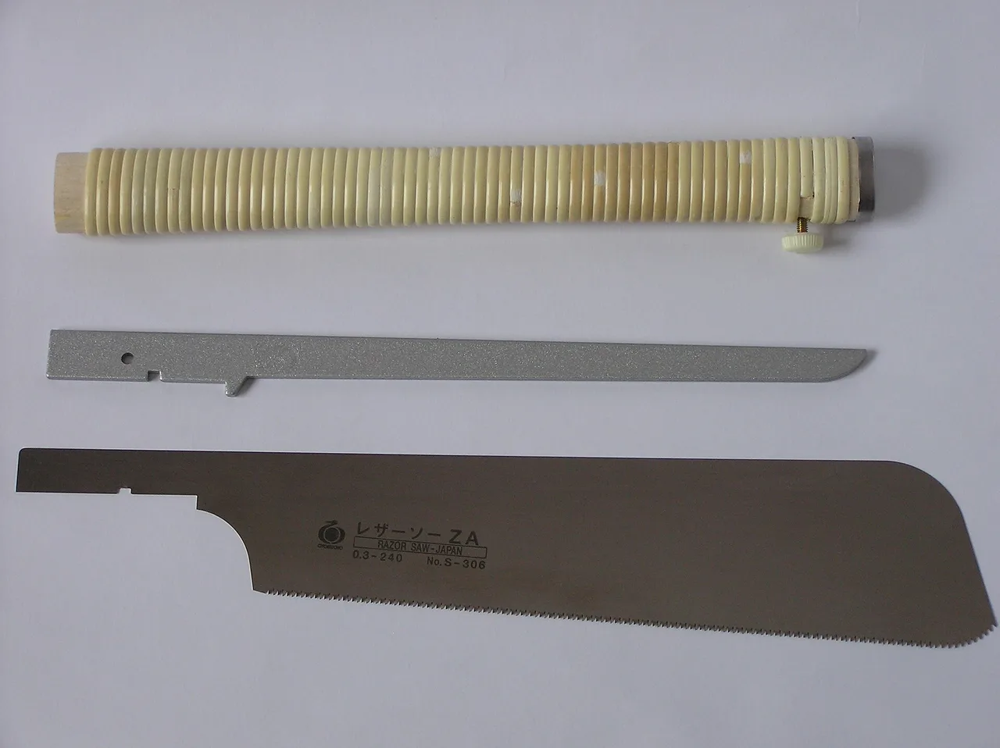

Japanese hand tools for beginners: pull saws, chisels and a kanna from Sanjo and Ono
You've watched enough joinery videos to want a Japanese pull saw, and maybe a chisel or a wooden plane to go with it — but the listings blur into a wall of ryoba, dozuki, nomi and kanna, and nobody explains which one to buy first or what will frustrate you on day one. This guide picks a sensible first five: two saws from SUIZAN, one from Gyokucho, and a chisel set and a small plane from KAKURI. Four of the five come from the hardware town of Sanjo in Niigata, the fifth from Ono in Hyogo, and we look at where those places sit on the map before the comparison table. This is an editorial comparison built on manufacturer specifications and long-running public user feedback — every pick below comes with its honest downside, and two of them (the chisels and the plane) will need sharpening before they cut the way you hope.

How to choose: three things that actually matter
1. Ryoba or dozuki — which saw is your first saw? Japanese saws cut on the pull stroke, which lets the blade be far thinner than a Western push saw and leaves a narrower, cleaner kerf. A ryoba (両刃) has teeth on both edges — one side filed for cutting along the grain (rip), the other for cutting across it — so one blade handles most jobs. A dozuki (胴付) has a stiff spine along its back and very fine teeth: it cuts straighter and finer, but the spine limits how deep it can go, so it's a joinery saw, not a general one. If you only buy one, buy the ryoba. The universal downside of pull saws is the flip side of the thin blade: push instead of pull, or twist in the cut, and the blade can buckle or lose teeth.
2. Replaceable blade or resharpenable. The saws in this guide are all replaceable-blade (替刃式): the teeth are hardened so they stay sharp a long time, and when they finally dull you swap the blade rather than sharpen it. That's practical for a beginner — hand-filing Japanese saw teeth is a skill of its own — but it means the blade is a consumable and you'll want to be sure replacements are easy to find in your country before you commit to a brand.
3. Chisels and planes are sold sharp-ish, not ready. This is the honest bit the listings gloss over. Japanese chisels (鑿, nomi) and planes (鉋, kanna) use a laminated blade — a thin layer of hard steel forge-welded to softer iron — and they are expected to be finished by the owner: the back flattened, the bevel honed, and on a plane the wooden body (台, dai) tuned so the blade projects evenly. Public reviews of even well-regarded budget tools are full of "arrived dull" comments that are really "arrived unfinished". If you don't own a sharpening stone yet, read our Japanese whetstones guide alongside this one — a #1000 stone is the real first purchase for a chisel or plane.
Why Sanjo and Ono matter
Look at where these tools are made and two towns keep coming up. SUIZAN and KAKURI both give Sanjo, Niigata Prefecture as their home, and Gyokucho (Razorsaw Manufacturing) is based in Ono, Hyogo Prefecture — both long-standing hardware-making districts, according to the makers' own company information. Neither town features in the tourist-facing profile of its prefecture: in our 47-prefecture dataset (prefectures.json), Niigata's entry leads with Koshihikari rice, sake breweries and "Snow Country" powder, and Hyogo's with Kobe and Himeji Castle. Working hardware towns rarely make the highlight reel — which is rather the point. Our Niigata guide and Hyogo guide cover the prefectures themselves. If you're planning a trip and wondering how far apart the two tool regions are, our rail reachability matrix (reachability.json, approximate fastest typical service, June 2026 timetables, roughly ±20%) gives these times to each prefecture's main station:
| From | To Niigata Station (Niigata / Sanjo side) | To Sannomiya Station (Hyogo / Ono side) |
|---|---|---|
| Tokyo Station | about 100 min | about 160 min |
| Kyoto Station | about 245 min | about 30 min |
| Shin-Osaka Station | about 255 min | about 15 min |
Source: NihongoHub reachability matrix (data/reachability.json, last updated 2026-06-12), which measures to the prefecture's main station, not to Sanjo or Ono themselves — add a local leg for either. Times on the Tokaido/Sanyo shinkansen assume the fastest trains, which the nationwide Japan Rail Pass does not cover. Read it as "Sanjo is a Tokyo-side day trip; Ono is a Kansai-side one", not as a timetable.
At a glance
| Tool | Type | Made in | Blade | Setup needed | Best for… | Find it |
|---|---|---|---|---|---|---|
| SUIZAN Ryoba 9.5"両刃鋸 240mm | Double-edged pull saw (rip + crosscut) | Sanjo, Niigata | Replaceable | None | The one saw to buy first | Check price → |
| SUIZAN Dozuki 9.5"胴付鋸 240mm | Back saw, fine teeth | Sanjo, Niigata | Replaceable | None | Joinery cuts, dovetails, tenon shoulders | Check price → |
| Gyokucho Razorsaw Ryoba 9-1/2" (hardwood)レザーソー 両刃 硬木用 | Double-edged pull saw, hardwood tooth pattern | Ono, Hyogo | Replaceable | None | Oak, maple, walnut and other hard stock | Check price → |
| KAKURI Oire Nomi 3-piece set追入鑿 3本組 白樫柄 | Bench chisels, white-oak handles, steel hoops | Sanjo, Niigata | Laminated, resharpenable | Yes — flatten back, hone, seat hoops | A first Japanese chisel set | Check price → |
| KAKURI Kanna 42mm小鉋 42mm | Small wooden-bodied pull plane | Sanjo, Niigata | Laminated, resharpenable | Yes — hone blade, tune the dai | Chamfers, small parts, learning how a kanna works | Check price → |
The "Check price" links are affiliate links (Amazon). We may earn a small commission at no extra cost to you, and it never changes what we recommend. As an Amazon Associate, NihongoHub earns from qualifying purchases.
The tools, honestly reviewed
SUIZAN Ryoba 9.5" — the one saw to buy first
SUIZAN's 240 mm ryoba is the default recommendation for a first Japanese saw, and its public record backs that up: as of August 2026 it carries a rating around 4.8 stars from close to ten thousand amazon.com reviews, which for a hand tool is unusual. The formula is simple — a thin double-edged blade (rip teeth on one edge, crosscut on the other) on a long wrapped wooden handle, made in Sanjo, with a replaceable blade. Reviewers consistently describe the same first-cut surprise: how little effort the pull stroke takes and how narrow and clean the kerf is compared with a Western hand saw. The honest caveats are the ones that apply to every ryoba: the blade flexes, so it rewards a light grip and punishes anyone who leans on it or pushes; the two tooth patterns mean you have to notice which edge you're using; and when the teeth eventually dull you buy a blade, not a file.
✔ Rip and crosscut in one blade · thin kerf, low effort · replaceable blade · the largest body of public feedback of the five
✘ Thin blade buckles if pushed or twisted · a consumable blade rather than a resharpenable one · no spine, so it wanders more than a dozuki on very fine work
Best for: anyone buying their first Japanese saw, general workshop and DIY cutting, softwood and medium hardwood. Skip it if: your main use is fine joinery in a vise — that's a dozuki job — or you specifically want to learn to file your own teeth.
SUIZAN Dozuki 9.5" — the joinery specialist
The dozuki is the ryoba's precise sibling: a stiff spine along the back of a very thin blade, and finer teeth than the ryoba's crosscut side. That spine is what makes it cut so straight — dovetails, tenon shoulders and small trim cuts come out with a glassy face — and it's why joinery-focused reviewers rate it around 4.7 stars in public feedback. It's also the dozuki's limitation: the spine stops the blade sinking any deeper than the blade's own height, so it can't cut through thick stock, and the fine teeth are slow in anything but small sections. Same Sanjo origin, same replaceable-blade format as the ryoba, same warning about pushing.
✔ Very straight, very clean cuts · fine teeth suit dovetails and shoulders · replaceable blade
✘ Spine limits depth of cut — not a general saw · slow in thick or wide stock · fragile teeth if forced
Best for: woodworkers who already own a ryoba (or a Western panel saw) and want a dedicated joinery saw. Skip it if: this would be your only saw — buy the ryoba first.
Gyokucho Razorsaw Ryoba 9-1/2" (hardwood) — the Ono alternative
Gyokucho, the maker behind the Razorsaw brand, is the name most closely tied to the replaceable-blade Japanese saw, and its factory sits in Ono, Hyogo — the one non-Sanjo tool in this guide. This 240 mm ryoba is the version filed for hardwoods: the tooth geometry is tuned so the saw bites cleanly into oak, maple or walnut where a general-purpose ryoba can grab and chatter. Public feedback runs around 4.8 stars, from a smaller pool of reviews than the SUIZAN, and the recurring praise is the smoothness of the cut in dense stock. The honest trade: it's a specialist, so in softwood it's no better (and arguably slower) than the general SUIZAN; and as with every replaceable-blade saw, you're buying into that maker's blade supply.
✔ Tooth pattern made for hard, dense wood · the classic replaceable-blade brand · thin kerf, clean finish
✘ Slower in softwood than a general ryoba · fewer public reviews than the SUIZAN · replacement blades are a recurring cost
Best for: furniture makers working mainly in hardwoods, or anyone who wants a second ryoba dedicated to dense stock. Skip it if: your projects are pine, cedar and plywood — the general SUIZAN ryoba is the better first buy.
KAKURI Oire Nomi 3-piece set — a first Japanese chisel set
KAKURI is a Sanjo hardware maker, and this three-piece oire nomi (追入鑿, bench chisel) set is the affordable way into Japanese chisels: laminated blades with a hard-steel edge on a softer iron body, hollow-ground backs, white oak (白樫) handles and steel hoops on the end so they can be struck with a hammer. Public feedback sits around 4.7 stars, and the positive comments are about the steel taking a keen edge for the money. Read the critical ones too, because they describe the reality of Japanese chisels rather than a fault: the backs need flattening and the bevels honing before first use, and the hoops (katsura) should be seated and the handle end mushroomed over them — a small ritual, but nobody does it for you. Three widths cover most beginner joinery; they won't replace a full set of nine.
✔ Laminated steel that sharpens well for the price · white-oak handles with hoops for striking · three useful widths to start
✘ Needs setup — flatten backs, hone bevels, seat the hoops · only three sizes · finish and consistency below premium hand-forged chisels
Best for: anyone with (or about to buy) a #1000 whetstone who wants to learn Japanese chisels without a big outlay. Skip it if: you want tools that work straight out of the box, or you already know you want a full set — buy once, buy bigger.
KAKURI Kanna 42mm — a small plane, and a small education
A kanna is a Japanese wooden-bodied plane, pulled toward you rather than pushed, and this KAKURI 42 mm model is a compact one — a blade width for chamfers, edges, small parts and boxes rather than flattening tabletops. It has the second-largest body of public feedback of the five and also the lowest rating, around 4.4 stars from several thousand amazon.com reviews as of August 2026, and the gap between those two facts is the whole story of a beginner's plane. The happy reviews describe fine, translucent shavings once it's set up. The unhappy ones describe a blade that arrived unsharpened and a body that needed conditioning — which is what a wooden plane at this price is: a kit that becomes a tool once you hone the blade and tune the dai. Blade projection is set by tapping the blade in and the body's back end out with a small hammer, and there's a knack to it. If that sounds like fun, this is a very cheap way to learn it; if it sounds like a chore, it will be one.
✔ Inexpensive way to learn how a kanna works · compact — handy for chamfers and small work · laminated blade that can be brought to a good edge
✘ Arrives needing sharpening and dai tuning · too small for flattening boards · hammer-set blade adjustment has a learning curve · lowest rating of the five for exactly these reasons
Best for: the curious woodworker who owns a stone and wants a first kanna to learn on for small jobs. Skip it if: you want a plane that works out of the box or a full-size smoother — look at a larger kanna, or a Western bench plane, instead.
A #1000 medium waterstone is the real first purchase for the KAKURI chisels and kanna, and a finer stone is the upgrade — see our Japanese whetstones guide: King vs Shapton vs Suehiro vs Naniwa →. The saws, being replaceable-blade, need no stone at all.
The verdict: one pick per person
- Buying your very first Japanese tool: SUIZAN Ryoba 9.5" — one blade, both cuts, no setup, and the deepest public track record of the five.
- You already have a saw and want clean joinery: SUIZAN Dozuki 9.5" — accept the depth limit for the straightness.
- You work in oak, maple, walnut: Gyokucho Razorsaw Ryoba (hardwood) — the Ono-made specialist for dense stock.
- You own (or are buying) a whetstone and want to learn chisels: KAKURI Oire Nomi 3-piece set — with an evening of setup budgeted in.
- You want to understand how a kanna works, cheaply: KAKURI Kanna 42mm — treat it as a kit and a lesson, not a finished plane.
Prefer building to cutting? The wooden and plastic Japanese castle model kits — Himeji Castle included, which is Hyogo's headline landmark — scratch a related itch with no sharpening required.
The Japanese you'll meet on the box
| Japanese | Reading | Meaning |
|---|---|---|
| 鋸 | nokogiri | saw |
| 両刃 | ryoba | "double edge" — a saw with rip teeth on one side, crosscut on the other |
| 胴付 | dozuki | back saw with a stiffening spine, for joinery |
| 替刃 | kaeba | replacement blade — the format of every saw in this guide |
| 鑿 | nomi | chisel; 追入鑿 (oire nomi) is the everyday bench chisel |
| 鉋 | kanna | plane; 台 (dai) is its wooden body |
| 白樫 | shirakashi | white oak — the classic chisel-handle wood |
| 裏 | ura | the flat back of a chisel or plane blade — flatten it before anything else |
| 砥石 | toishi | whetstone — the purchase this guide keeps pointing you toward |
Want words like these to stick? The free JLPT battle quiz drills vocabulary with spaced repetition.
Common questions
Q. Ryoba or dozuki — which Japanese saw should I buy first?
A. The ryoba. It has rip teeth on one edge and crosscut teeth on the other, has no spine to limit depth, and handles most general cutting. A dozuki cuts straighter and finer thanks to its spine, but that spine caps how deep it can go, so it's a second saw for joinery.
Q. Why do Japanese saws cut on the pull stroke?
A. Pulling keeps the blade in tension, so it can be much thinner than a push saw without buckling; a thinner blade means a narrower kerf and less effort. The trade-off is that the same thin blade will bend or lose teeth if you push it or twist in the cut.
Q. Do Japanese chisels and planes come ready to use?
A. Generally no. Even well-reviewed budget sets like the KAKURI chisels and kanna arrive expecting the owner to flatten the back, hone the bevel and — for a plane — tune the wooden body. Budget a whetstone (a #1000 stone first) and an evening of setup; without that they will feel dull, and public reviews reflect exactly that.
Q. Where are SUIZAN, KAKURI and Gyokucho tools made?
A. SUIZAN and KAKURI both give Sanjo in Niigata Prefecture as their home; Gyokucho (Razorsaw) is based in Ono in Hyogo Prefecture. On our approximate rail matrix, Niigata's main station is about 100 minutes from Tokyo, while Hyogo's Sannomiya is about 15 minutes from Shin-Osaka — Sanjo is the Tokyo-side hardware town, Ono the Kansai-side one.
How we choose: this is an editorial comparison based on manufacturer specifications and long-running public user feedback — we have not been paid to place any product, and we note what each tool does badly as well as what it does well. Some links are affiliate links — we may earn a commission at no extra cost to you, and it never changes what we recommend or the price you pay.
data/prefectures.json); travel times from NihongoHub's rail reachability matrix (data/reachability.json, approximate, last updated 2026-06-12). Setup notes on chisels and planes are general to Japanese laminated-blade tools, not a report of testing these units.